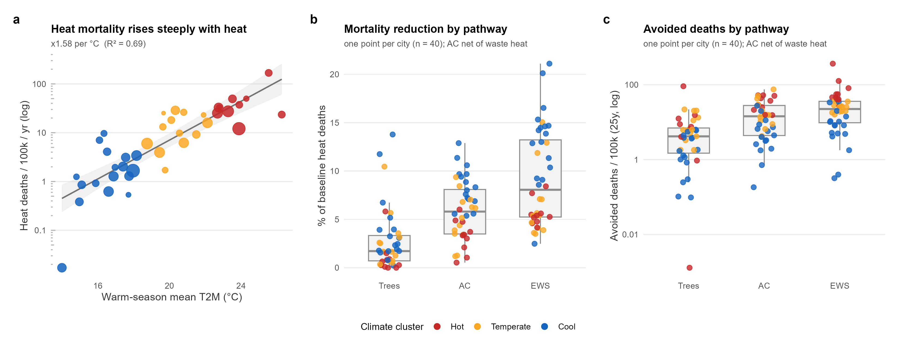
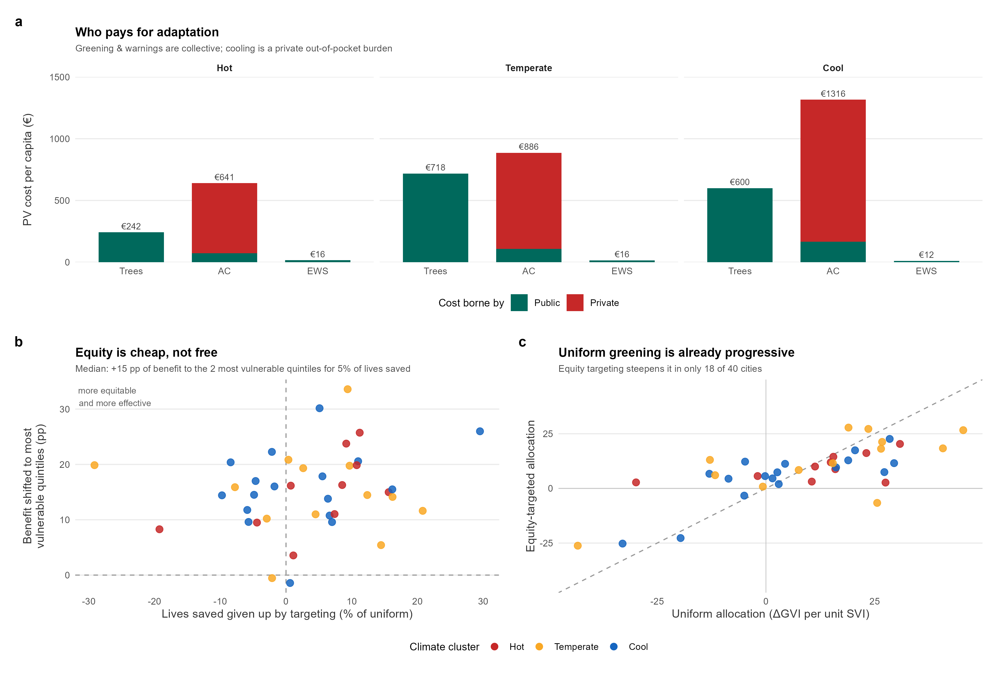
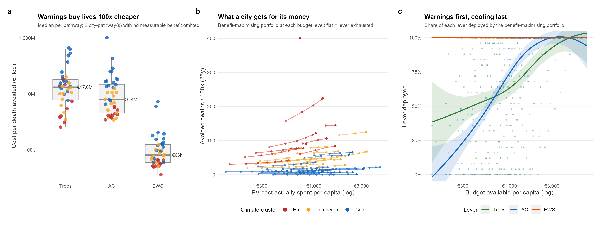
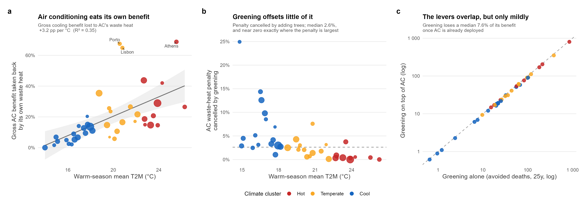
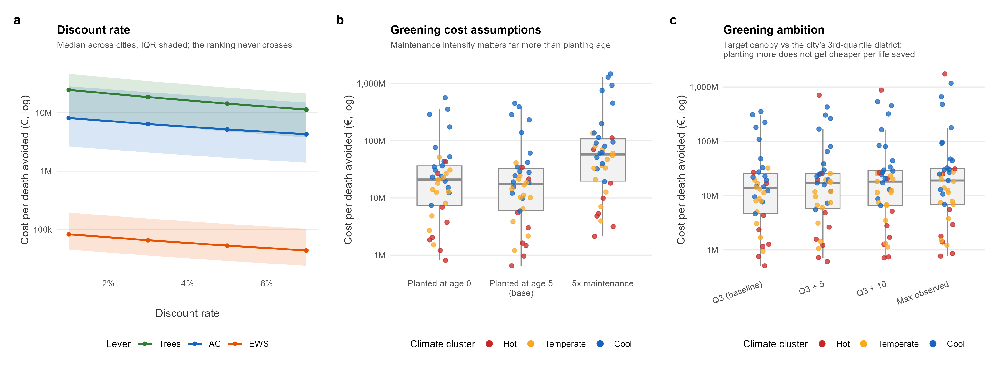
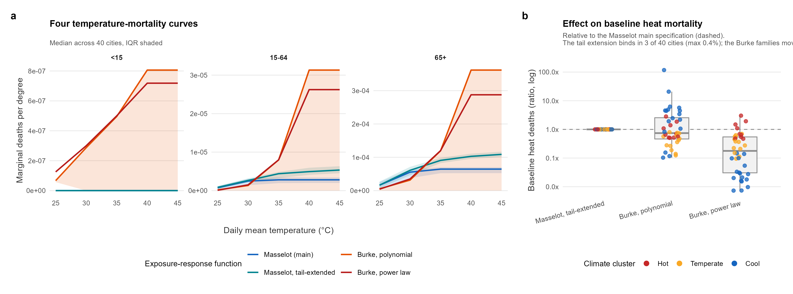
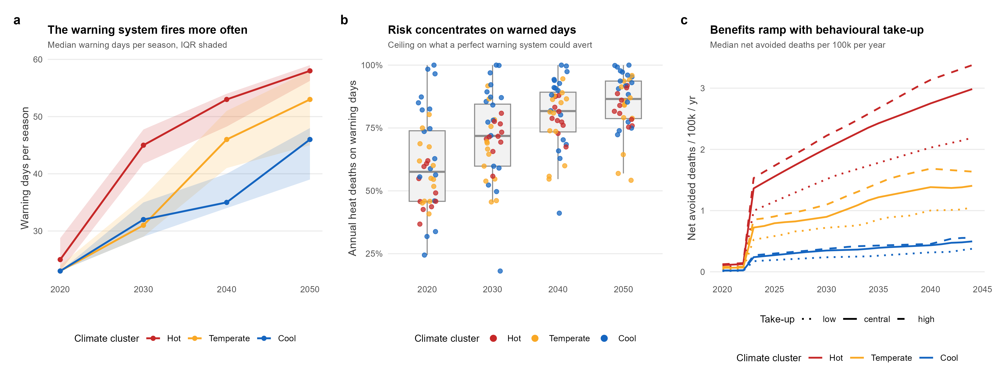
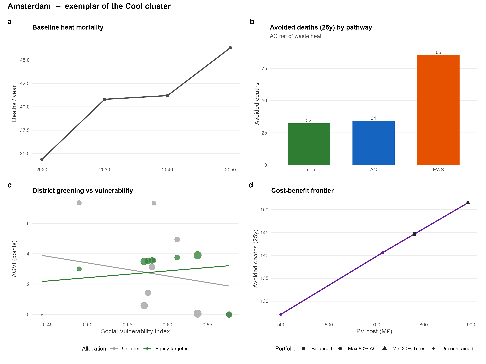
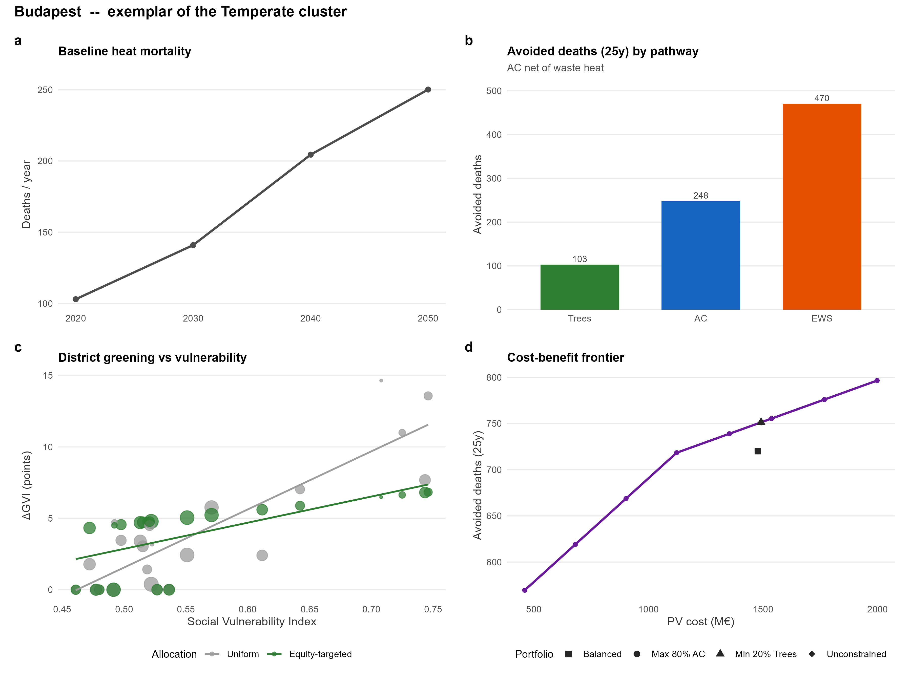
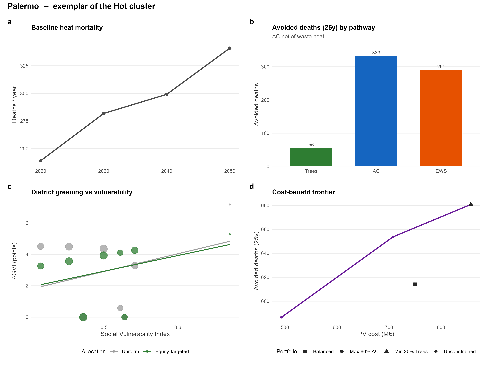

Figures and tables for the Nature Cities results manuscript.
Baseline heat mortality against warm-season temperature (log-log), then the mortality reduction and avoided deaths delivered by each pathway. One point per city; AC is net of its waste-heat feedback.

figures/fig1_risk_effectiveness.png · PDF
Public versus private cost per capita by lever; the equity-efficiency trade-off of targeting cooling support by income; and whether an explicit equity rule makes greening more progressive than a uniform one.

figures/fig2_distribution.png · PDF
Euros per death avoided by pathway; the budget frontier normalised per capita so 40 cities share one pair of axes; and the order in which a benefit-maximising city buys the three levers.

figures/fig3_costeffectiveness.png · PDF
How much of air conditioning's benefit its own waste heat takes back, how little of that greening offsets, and how far the two levers overlap.

figures/fig4_synergies.png · PDF
Discount rate, greening cost assumptions and greening ambition. None of them reorders the three levers.

figures/si1_sensitivity.png · PDF
The four temperature-mortality curves the runs ship, and what choosing between them does to baseline heat mortality.

figures/si2_if_comparison.png · PDF
Warning days to 2050, the share of heat deaths falling on warned days, and the behavioural take-up ramp behind the benefits.

figures/si3_ews.png · PDF
Single-city dashboard: baseline mortality trajectory, avoided deaths by pathway, district greening against vulnerability, and the cost-benefit frontier with constrained portfolios.

figures/exemplar_amsterdam.png · PDF
Single-city dashboard: baseline mortality trajectory, avoided deaths by pathway, district greening against vulnerability, and the cost-benefit frontier with constrained portfolios.

figures/exemplar_budapest.png · PDF
Single-city dashboard: baseline mortality trajectory, avoided deaths by pathway, district greening against vulnerability, and the cost-benefit frontier with constrained portfolios.

figures/exemplar_palermo.png · PDF
Three rows per city. A blank cost per death marks a pathway avoiding fewer than 0.5 deaths over 25 years.
| City | Cluster | Pathway | PV cost (M€) | PV cost per capita (€) | Avoided deaths (25y) | Cost per death (k€) | Public share (%) |
|---|---|---|---|---|---|---|---|
| Athens | Hot | Trees | 122.3 | 184 | 83 | 1478 | 100 |
| Athens | Hot | AC | 328.6 | 494 | 167 | 1965 | 10 |
| Athens | Hot | EWS | 31.8 | 48 | 2421 | 13 | 100 |
| Barcelona | Hot | Trees | 382.9 | 201 | 18 | 21369 | 100 |
| Barcelona | Hot | AC | 1080.1 | 567 | 405 | 2666 | 13 |
| Barcelona | Hot | EWS | 33.4 | 18 | 1059 | 32 | 100 |
| Bologna | Hot | Trees | 74.2 | 194 | 25 | 3007 | 100 |
| Bologna | Hot | AC | 235 | 615 | 142 | 1660 | 13 |
| Bologna | Hot | EWS | 7.6 | 20 | 175 | 43 | 100 |
| Madrid | Hot | Trees | 458.4 | 138 | 0 | — | 100 |
| Madrid | Hot | AC | 1816.5 | 548 | 509 | 3566 | 12 |
| Madrid | Hot | EWS | 37.4 | 11 | 886 | 42 | 100 |
| Milan | Hot | Trees | 205.6 | 149 | 213 | 968 | 100 |
| Milan | Hot | AC | 1210.9 | 880 | 694 | 1746 | 13 |
| Milan | Hot | EWS | 20.3 | 15 | 766 | 27 | 100 |
| Naples | Hot | Trees | 554.2 | 593 | 849 | 653 | 100 |
| Naples | Hot | AC | 578 | 618 | 488 | 1186 | 11 |
| Naples | Hot | EWS | 19.9 | 21 | 757 | 26 | 100 |
| Palermo | Hot | Trees | 311.5 | 487 | 56 | 5529 | 100 |
| Palermo | Hot | AC | 536.9 | 839 | 333 | 1612 | 10 |
| Palermo | Hot | EWS | 8.8 | 14 | 291 | 30 | 100 |
| Rome | Hot | Trees | 294.8 | 122 | 181 | 1626 | 100 |
| Rome | Hot | AC | 1297.7 | 539 | 698 | 1859 | 11 |
| Rome | Hot | EWS | 25.2 | 10 | 974 | 26 | 100 |
| Sevilla | Hot | Trees | 144.3 | 212 | 0 | — | 100 |
| Sevilla | Hot | AC | 961.7 | 1410 | 296 | 3252 | 9 |
| Sevilla | Hot | EWS | 12.2 | 18 | 276 | 44 | 100 |
| Thessaloniki | Hot | Trees | 522.7 | 1395 | 15 | 34392 | 100 |
| Thessaloniki | Hot | AC | 82.8 | 221 | 59 | 1414 | 12 |
| Thessaloniki | Hot | EWS | 11.5 | 31 | 471 | 24 | 100 |
| Bratislava | Temperate | Trees | 554.9 | 1276 | 26 | 21218 | 100 |
| Bratislava | Temperate | AC | 324.6 | 746 | 28 | 11398 | 15 |
| Bratislava | Temperate | EWS | 6.6 | 15 | 69 | 95 | 100 |
| Bucharest | Temperate | Trees | 38.2 | 22 | 32 | 1209 | 100 |
| Bucharest | Temperate | AC | 928 | 535 | 350 | 2652 | 11 |
| Bucharest | Temperate | EWS | 16 | 9 | 489 | 33 | 100 |
| Budapest | Temperate | Trees | 1151.1 | 693 | 103 | 11193 | 100 |
| Budapest | Temperate | AC | 1105.5 | 666 | 248 | 4454 | 12 |
| Budapest | Temperate | EWS | 17.5 | 11 | 470 | 37 | 100 |
| Lisbon | Temperate | Trees | 1196.6 | 2202 | 119 | 10084 | 100 |
| Lisbon | Temperate | AC | 659.5 | 1213 | 59 | 11157 | 9 |
| Lisbon | Temperate | EWS | 18.8 | 35 | 193 | 98 | 100 |
| Ljubljana | Temperate | Trees | 607.6 | 2230 | 36 | 16814 | 100 |
| Ljubljana | Temperate | AC | 292.2 | 1072 | 204 | 1433 | 13 |
| Ljubljana | Temperate | EWS | 5.8 | 21 | 102 | 58 | 100 |
| Lyon | Temperate | Trees | 459.2 | 805 | 19 | 24563 | 100 |
| Lyon | Temperate | AC | 586.7 | 1029 | 90 | 6539 | 14 |
| Lyon | Temperate | EWS | 15 | 26 | 149 | 101 | 100 |
| Marseille | Temperate | Trees | 634.5 | 721 | 98 | 6466 | 100 |
| Marseille | Temperate | AC | 665.6 | 756 | 136 | 4877 | 15 |
| Marseille | Temperate | EWS | 11.5 | 13 | 168 | 69 | 100 |
| Paris | Temperate | Trees | 989 | 427 | 97 | 10241 | 100 |
| Paris | Temperate | AC | 3251 | 1403 | 206 | 15789 | 11 |
| Paris | Temperate | EWS | 63.7 | 27 | 415 | 154 | 100 |
| Porto | Temperate | Trees | 399.1 | 743 | 10 | 41179 | 100 |
| Porto | Temperate | AC | 260.6 | 485 | 23 | 11465 | 11 |
| Porto | Temperate | EWS | 10 | 19 | 136 | 73 | 100 |
| Sofia | Temperate | Trees | 914.9 | 757 | 63 | 14438 | 100 |
| Sofia | Temperate | AC | 707.8 | 586 | 606 | 1169 | 11 |
| Sofia | Temperate | EWS | 8.5 | 7 | 321 | 26 | 100 |
| Varna | Temperate | Trees | 135.7 | 437 | 63 | 2167 | 100 |
| Varna | Temperate | AC | 191.5 | 616 | 90 | 2118 | 12 |
| Varna | Temperate | EWS | 3.8 | 12 | 61 | 63 | 100 |
| Vienna | Temperate | Trees | 1479.2 | 788 | 382 | 3876 | 100 |
| Vienna | Temperate | AC | 2183.4 | 1163 | 257 | 8493 | 13 |
| Vienna | Temperate | EWS | 20.9 | 11 | 471 | 44 | 100 |
| Zagreb | Temperate | Trees | 805 | 1168 | 44 | 18449 | 100 |
| Zagreb | Temperate | AC | 397.9 | 577 | 293 | 1360 | 15 |
| Zagreb | Temperate | EWS | 7 | 10 | 135 | 52 | 100 |
| Amsterdam | Cool | Trees | 316.9 | 376 | 32 | 9806 | 100 |
| Amsterdam | Cool | AC | 562.4 | 667 | 34 | 16545 | 12 |
| Amsterdam | Cool | EWS | 14 | 17 | 85 | 165 | 100 |
| Berlin | Cool | Trees | 1250.4 | 340 | 67 | 18537 | 100 |
| Berlin | Cool | AC | 5821.1 | 1581 | 211 | 27541 | 12 |
| Berlin | Cool | EWS | 29 | 8 | 303 | 96 | 100 |
| Brussels | Cool | Trees | 1871.4 | 1200 | 98 | 19060 | 100 |
| Brussels | Cool | AC | 1579.5 | 1013 | 49 | 32196 | 12 |
| Brussels | Cool | EWS | 15.1 | 10 | 81 | 187 | 100 |
| Cologne | Cool | Trees | 493.7 | 416 | 20 | 24478 | 100 |
| Cologne | Cool | AC | 1755.5 | 1479 | 87 | 20217 | 12 |
| Cologne | Cool | EWS | 13.7 | 12 | 96 | 142 | 100 |
| Copenhagen | Cool | Trees | 254.5 | 405 | 1 | 393163 | 100 |
| Copenhagen | Cool | AC | 1275.1 | 2029 | 21 | 61719 | 11 |
| Copenhagen | Cool | EWS | 9.7 | 15 | 26 | 375 | 100 |
| Dublin | Cool | Trees | 279 | 225 | 1 | 230887 | 100 |
| Dublin | Cool | AC | 2316.1 | 1868 | 2 | 1024469 | 11 |
| Dublin | Cool | EWS | 17.8 | 14 | 5 | 3613 | 100 |
| Hamburg | Cool | Trees | 239.3 | 140 | 20 | 12092 | 100 |
| Hamburg | Cool | AC | 2791.9 | 1632 | 33 | 83639 | 13 |
| Hamburg | Cool | EWS | 12.8 | 8 | 30 | 422 | 100 |
| Helsinki | Cool | Trees | 265.3 | 291 | 8 | 34917 | 100 |
| Helsinki | Cool | AC | 816.1 | 894 | 23 | 34787 | 15 |
| Helsinki | Cool | EWS | 10.9 | 12 | 45 | 240 | 100 |
| Munich | Cool | Trees | 865.5 | 598 | 55 | 15632 | 100 |
| Munich | Cool | AC | 2310.4 | 1596 | 125 | 18465 | 13 |
| Munich | Cool | EWS | 18 | 12 | 204 | 88 | 100 |
| Nantes | Cool | Trees | 432.7 | 1345 | 1 | 451065 | 100 |
| Nantes | Cool | AC | 427.2 | 1328 | 2 | 186433 | 14 |
| Nantes | Cool | EWS | 5.4 | 17 | 1 | 5322 | 100 |
| Prague | Cool | Trees | 547.4 | 422 | 13 | 41889 | 100 |
| Prague | Cool | AC | 1326.1 | 1022 | 52 | 25351 | 14 |
| Prague | Cool | EWS | 13.6 | 11 | 108 | 127 | 100 |
| Riga | Cool | Trees | 633.3 | 1058 | 22 | 29035 | 100 |
| Riga | Cool | AC | 697.2 | 1164 | 119 | 5863 | 11 |
| Riga | Cool | EWS | 7.3 | 12 | 209 | 35 | 100 |
| Rotterdam | Cool | Trees | 900.4 | 1797 | 6 | 138874 | 100 |
| Rotterdam | Cool | AC | 645.5 | 1288 | 22 | 29037 | 12 |
| Rotterdam | Cool | EWS | 13.3 | 27 | 53 | 250 | 100 |
| Stockholm | Cool | Trees | 683.6 | 705 | 2 | 285076 | 100 |
| Stockholm | Cool | AC | 1075.2 | 1109 | 17 | 62865 | 15 |
| Stockholm | Cool | EWS | 15.3 | 16 | 47 | 327 | 100 |
| Tallinn | Cool | Trees | 1539.1 | 3667 | 25 | 60966 | 100 |
| Tallinn | Cool | AC | 589.5 | 1404 | 28 | 21289 | 14 |
| Tallinn | Cool | EWS | 6.7 | 16 | 43 | 156 | 100 |
| Vilnius | Cool | Trees | 613 | 1242 | 22 | 27971 | 100 |
| Vilnius | Cool | AC | 583.3 | 1182 | 135 | 4309 | 13 |
| Vilnius | Cool | EWS | 6 | 12 | 166 | 36 | 100 |
| Warsaw | Cool | Trees | 598.4 | 329 | 101 | 5923 | 100 |
| Warsaw | Cool | AC | 1271 | 698 | 205 | 6214 | 13 |
| Warsaw | Cool | EWS | 17.3 | 10 | 363 | 48 | 100 |
Climate metrics from the 2020 baseline hazard, with the model's own exposure population as denominator.
| City | Country | Cluster | Pop (k) | Warm-season T2M (°C) | Hot days | Heat deaths/yr (2020) | Heat deaths / 100k |
|---|---|---|---|---|---|---|---|
| Sevilla | Spain | Hot | 682 | 26.3 | 99 | 161 | 23.5 |
| Athens | Greece | Hot | 665 | 25.5 | 98 | 1118 | 168.2 |
| Thessaloniki | Greece | Hot | 375 | 24.3 | 79 | 187 | 49.9 |
| Palermo | Italy | Hot | 640 | 23.9 | 71 | 239 | 37.3 |
| Madrid | Spain | Hot | 3314 | 23.9 | 73 | 401 | 12.1 |
| Naples | Italy | Hot | 935 | 23.5 | 63 | 462 | 49.4 |
| Rome | Italy | Hot | 2408 | 23.3 | 65 | 663 | 27.5 |
| Bologna | Italy | Hot | 382 | 22.8 | 57 | 126 | 33.1 |
| Milan | Italy | Hot | 1376 | 22.7 | 49 | 451 | 32.8 |
| Barcelona | Spain | Hot | 1906 | 22.7 | 44 | 481 | 25.2 |
| Bucharest | Romania | Temperate | 1734 | 22.1 | 33 | 276 | 15.9 |
| Varna | Bulgaria | Temperate | 311 | 21.9 | 25 | 72 | 23.2 |
| Marseille | France | Temperate | 880 | 21.5 | 3 | 81 | 9.2 |
| Budapest | Hungary | Temperate | 1660 | 20.8 | 4 | 103 | 6.2 |
| Lisbon | Portugal | Temperate | 544 | 20.8 | 0 | 143 | 26.2 |
| Porto | Portugal | Temperate | 537 | 20.6 | 0 | 53 | 9.8 |
| Sofia | Bulgaria | Temperate | 1209 | 20.3 | 1 | 348 | 28.8 |
| Zagreb | Croatia | Temperate | 689 | 20.1 | 2 | 125 | 18.2 |
| Bratislava | Slovakia | Temperate | 435 | 19.8 | 0 | 7 | 1.7 |
| Ljubljana | Slovenia | Temperate | 272 | 19.7 | 0 | 69 | 25.2 |
| Lyon | France | Temperate | 570 | 19.6 | 0 | 75 | 13.2 |
| Vienna | Austria | Temperate | 1878 | 19.4 | 0 | 74 | 3.9 |
| Paris | France | Temperate | 2318 | 18.7 | 0 | 139 | 6 |
| Warsaw | Poland | Cool | 1821 | 18.2 | 0 | 62 | 3.4 |
| Berlin | Germany | Cool | 3683 | 18 | 0 | 61 | 1.7 |
| Prague | Czechia | Cool | 1298 | 17.7 | 0 | 17 | 1.3 |
| Nantes | France | Cool | 322 | 17.7 | 0 | 2 | 0.5 |
| Cologne | Germany | Cool | 1187 | 17.6 | 0 | 37 | 3.1 |
| Munich | Germany | Cool | 1448 | 17.4 | 0 | 29 | 2 |
| Rotterdam | Netherlands | Cool | 501 | 17 | 0 | 10 | 1.9 |
| Brussels | Belgium | Cool | 1560 | 16.9 | 0 | 20 | 1.3 |
| Hamburg | Germany | Cool | 1711 | 16.6 | 0 | 11 | 0.6 |
| Amsterdam | Netherlands | Cool | 843 | 16.5 | 0 | 34 | 4.1 |
| Vilnius | Lithuania | Cool | 493 | 16.3 | 0 | 48 | 9.7 |
| Riga | Latvia | Cool | 599 | 16.1 | 0 | 42 | 7 |
| Copenhagen | Denmark | Cool | 628 | 15.9 | 0 | 6 | 0.9 |
| Helsinki | Finland | Cool | 913 | 15.1 | 0 | 8 | 0.9 |
| Stockholm | Sweden | Cool | 970 | 15 | 0 | 4 | 0.4 |
| Tallinn | Estonia | Cool | 420 | 14.8 | 0 | 5 | 1.2 |
| Dublin | Ireland | Cool | 1240 | 14 | 0 | 0 | 0 |
`Attribution' records which wording that city's run produced for the EWS row; all three carry the same central estimate.
| City | Cluster | Warning days 2020 | Warning days 2050 | Deaths on warning days (%) | Avoided deaths (25y) | Avoided / 100k | PV cost (k€) | Cost per death (k€) | Attribution |
|---|---|---|---|---|---|---|---|---|---|
| Athens | Hot | 37 | 52 | 62 | 2421 | 364 | 31758 | 13 | counterfactual |
| Thessaloniki | Hot | 37 | 58 | 61 | 471 | 125.6 | 11500 | 24 | counterfactual |
| Naples | Hot | 30 | 61 | 55 | 757 | 80.9 | 19945 | 26 | marginal |
| Milan | Hot | 25 | 59 | 46 | 766 | 55.7 | 20323 | 27 | marginal |
| Barcelona | Hot | 25 | 66 | 49 | 1059 | 55.6 | 33409 | 32 | marginal |
| Bologna | Hot | 25 | 57 | 46 | 175 | 45.9 | 7574 | 43 | marginal |
| Palermo | Hot | 23 | 58 | 37 | 291 | 45.5 | 8793 | 30 | marginal |
| Rome | Hot | 22 | 59 | 44 | 974 | 40.4 | 25219 | 26 | marginal |
| Sevilla | Hot | 23 | 56 | 43 | 276 | 40.4 | 12183 | 44 | marginal |
| Madrid | Hot | 23 | 54 | 60 | 886 | 26.7 | 37377 | 42 | marginal |
| Ljubljana | Temperate | 23 | 59 | 41 | 102 | 37.3 | 5843 | 58 | counterfactual |
| Lisbon | Temperate | 28 | 58 | 55 | 193 | 35.5 | 18842 | 98 | marginal |
| Budapest | Temperate | 23 | 60 | 62 | 470 | 28.3 | 17523 | 37 | intermediate |
| Bucharest | Temperate | 23 | 51 | 60 | 489 | 28.2 | 15971 | 33 | intermediate |
| Sofia | Temperate | 23 | 35 | 45 | 321 | 26.6 | 8453 | 26 | counterfactual |
| Lyon | Temperate | 24 | 56 | 52 | 149 | 26 | 14970 | 101 | marginal |
| Porto | Temperate | 24 | 46 | 68 | 136 | 25.3 | 9971 | 73 | marginal |
| Vienna | Temperate | 23 | 45 | 69 | 471 | 25.1 | 20893 | 44 | intermediate |
| Varna | Temperate | 23 | 31 | 46 | 61 | 19.8 | 3844 | 63 | counterfactual |
| Zagreb | Temperate | 23 | 40 | 46 | 135 | 19.5 | 6999 | 52 | counterfactual |
| Marseille | Temperate | 23 | 63 | 55 | 168 | 19 | 11545 | 69 | marginal |
| Paris | Temperate | 25 | 53 | 75 | 415 | 17.9 | 63704 | 154 | marginal |
| Bratislava | Temperate | 23 | 55 | 80 | 69 | 16 | 6633 | 95 | counterfactual |
| Riga | Cool | 23 | 46 | 63 | 209 | 34.9 | 7346 | 35 | counterfactual |
| Vilnius | Cool | 23 | 39 | 56 | 166 | 33.7 | 6016 | 36 | counterfactual |
| Warsaw | Cool | 23 | 50 | 83 | 363 | 19.9 | 17348 | 48 | counterfactual |
| Munich | Cool | 23 | 48 | 74 | 204 | 14.1 | 18046 | 88 | intermediate |
| Rotterdam | Cool | 24 | 46 | 56 | 53 | 10.6 | 13303 | 250 | intermediate |
| Tallinn | Cool | 23 | 45 | 87 | 43 | 10.3 | 6734 | 156 | counterfactual |
| Amsterdam | Cool | 25 | 41 | 32 | 85 | 10.1 | 14020 | 165 | intermediate |
| Prague | Cool | 23 | 53 | 82 | 108 | 8.3 | 13647 | 127 | counterfactual |
| Berlin | Cool | 23 | 47 | 75 | 303 | 8.2 | 28964 | 96 | intermediate |
| Cologne | Cool | 23 | 37 | 34 | 96 | 8.1 | 13677 | 142 | intermediate |
| Brussels | Cool | 23 | 46 | 59 | 81 | 5.2 | 15131 | 187 | intermediate |
| Helsinki | Cool | 23 | 45 | 97 | 45 | 5 | 10872 | 240 | intermediate |
| Stockholm | Cool | 23 | 48 | 98 | 47 | 4.8 | 15340 | 327 | intermediate |
| Copenhagen | Cool | 15 | 31 | 85 | 26 | 4.1 | 9741 | 375 | counterfactual |
| Hamburg | Cool | 23 | 37 | 46 | 30 | 1.8 | 12847 | 422 | intermediate |
| Dublin | Cool | 23 | 54 | 100 | 5 | 0.4 | 17799 | 3613 | counterfactual |
| Nantes | Cool | 27 | 30 | 24 | 1 | 0.3 | 5437 | 5322 | marginal |
The quantities behind Fig 4, city by city.
| City | Cluster | ΔGVI (points) | AC gross (25y) | AC net (25y) | Waste-heat penalty (deaths) | Penalty (% of gross) | Penalty removed by trees (%) | Greening benefit surviving AC (%) |
|---|---|---|---|---|---|---|---|---|
| Athens | Hot | 9.6 | 536 | 167 | 368.9 | 68.8 | 0.4 | 92.2 |
| Barcelona | Hot | 29.9 | 720 | 405 | 315.3 | 43.8 | 0.3 | 95.1 |
| Thessaloniki | Hot | 40.9 | 101 | 59 | 42.5 | 42 | 0.5 | 97.2 |
| Madrid | Hot | 35.8 | 717 | 509 | 207.6 | 28.9 | 0 | — |
| Sevilla | Hot | 11.3 | 402 | 296 | 106.5 | 26.5 | 0 | — |
| Naples | Hot | 43.4 | 615 | 488 | 127.5 | 20.7 | 3.7 | 94.5 |
| Milan | Hot | 16.1 | 853 | 694 | 158.9 | 18.6 | 0.9 | 96 |
| Bologna | Hot | 5.8 | 166 | 142 | 24.8 | 14.9 | 0.6 | 93.8 |
| Rome | Hot | 23.1 | 818 | 698 | 120.1 | 14.7 | 0.4 | 94 |
| Palermo | Hot | 24.4 | 390 | 333 | 56.8 | 14.6 | 0.3 | 95.7 |
| Porto | Temperate | 31.3 | 70 | 23 | 47.3 | 67.5 | 0.7 | 96.4 |
| Lisbon | Temperate | 93.9 | 168 | 59 | 109.3 | 64.9 | 7.6 | 94.2 |
| Paris | Temperate | 77.3 | 319 | 206 | 112.9 | 35.4 | 2.5 | 93.8 |
| Marseille | Temperate | 49.6 | 186 | 136 | 49.4 | 26.6 | 1.8 | 92.2 |
| Lyon | Temperate | 35.9 | 121 | 90 | 30.9 | 25.6 | 2.1 | 92 |
| Bratislava | Temperate | 43.6 | 37 | 28 | 8.8 | 23.6 | 3 | 91 |
| Bucharest | Temperate | 3 | 447 | 350 | 96.6 | 21.6 | 0.1 | 92.9 |
| Varna | Temperate | 10.6 | 109 | 90 | 18.6 | 17.1 | 3.2 | 98.2 |
| Budapest | Temperate | 90.4 | 297 | 248 | 49.2 | 16.5 | 1.4 | 89.4 |
| Vienna | Temperate | 116.1 | 301 | 257 | 44.3 | 14.7 | 4.3 | 92 |
| Sofia | Temperate | 71.4 | 678 | 606 | 72 | 10.6 | 0.6 | 94.7 |
| Ljubljana | Temperate | 47.6 | 219 | 204 | 15 | 6.9 | 2.6 | 85.8 |
| Zagreb | Temperate | 63 | 310 | 293 | 17.9 | 5.8 | 2.1 | 93.7 |
| Nantes | Cool | 33.8 | 3 | 2 | 0.6 | 20.3 | 6.9 | 92.5 |
| Prague | Cool | 42.9 | 62 | 52 | 9.3 | 15 | 1 | 92.1 |
| Rotterdam | Cool | 70.6 | 26 | 22 | 3.6 | 14.1 | 8.5 | 94.1 |
| Berlin | Cool | 98.1 | 245 | 211 | 33.3 | 13.6 | 3 | 86.3 |
| Munich | Cool | 67.9 | 143 | 125 | 18.4 | 12.8 | 3.3 | 92.3 |
| Warsaw | Cool | 46.7 | 230 | 205 | 25.4 | 11.1 | 2.7 | 89.2 |
| Cologne | Cool | 38.8 | 96 | 87 | 9 | 9.4 | 4.1 | 91 |
| Amsterdam | Cool | 24.8 | 37 | 34 | 3.3 | 8.9 | 14.4 | 95.7 |
| Stockholm | Cool | 53.4 | 18 | 17 | 1.3 | 6.9 | 2.9 | 94.7 |
| Brussels | Cool | 146.1 | 53 | 49 | 3.5 | 6.7 | 9.8 | 90.6 |
| Hamburg | Cool | 18.8 | 35 | 33 | 1.9 | 5.3 | 12.6 | 82.5 |
| Copenhagen | Cool | 19.9 | 22 | 21 | 1.1 | 4.9 | 2.5 | 95 |
| Helsinki | Cool | 20.7 | 24 | 23 | 1 | 4 | 4.5 | 90.7 |
| Riga | Cool | 49.6 | 122 | 119 | 3 | 2.5 | 5.1 | 85.6 |
| Vilnius | Cool | 47.9 | 138 | 135 | 2.9 | 2.1 | 3.1 | 88.7 |
| Tallinn | Cool | 120.3 | 28 | 28 | 0.5 | 1.6 | 24.9 | 86.1 |
| Dublin | Cool | 21.8 | 2 | 2 | 0 | 0 | — | 90.6 |
{kind=link}
{kind=link}
{kind=link}
{kind=link}
{kind=link}
{kind=link}
{kind=link}
{kind=link}
{kind=link}
{kind=link}